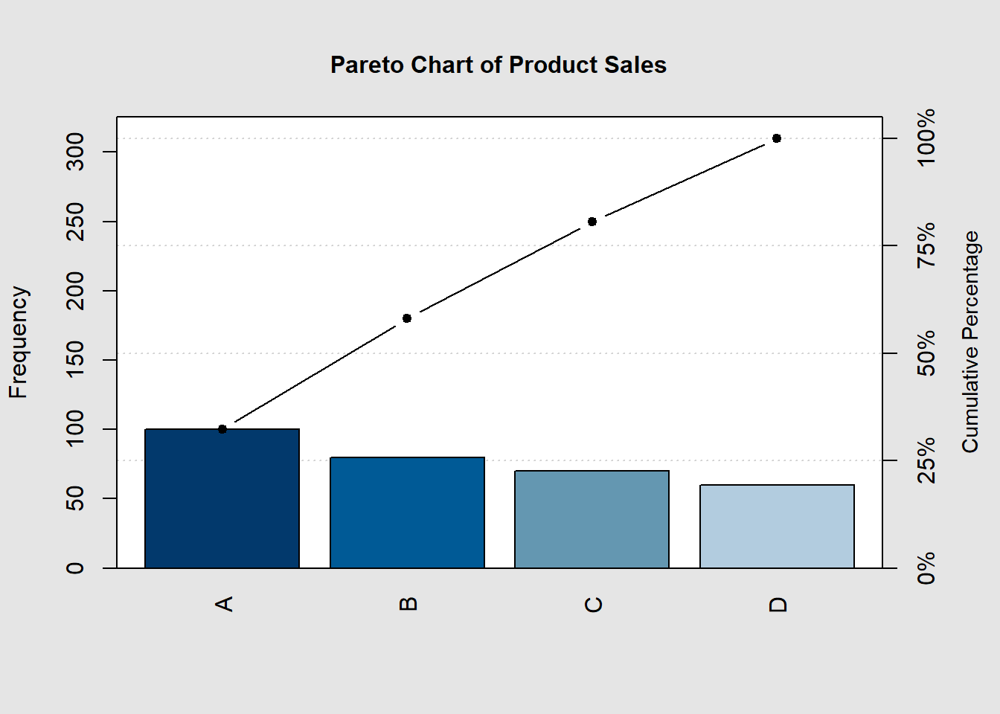
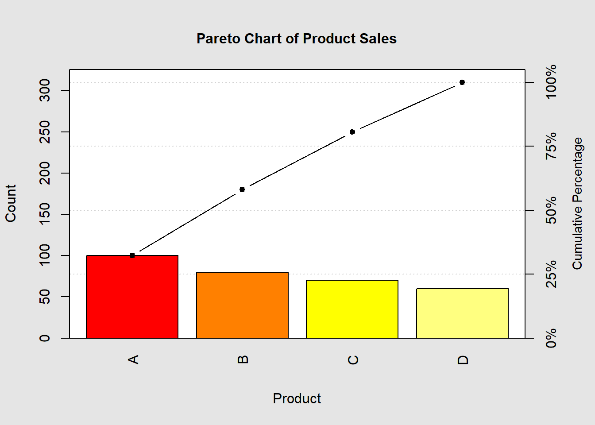

A Pareto chart is a type of bar chart that shows the frequency of different categories in a dataset, ordered by frequency from highest to lowest. It is often used to identify the most common problems or causes of a problem, so that resources can be focused on addressing them.
To create a Pareto chart in R, we can use the qcc package. The qcc package provides a number of functions for quality control, including the pareto.chart() function for creating Pareto charts.
Examples
Example 1: Creating a Pareto chart from a data frame
The following code shows how to create a Pareto chart from a data frame:
library(qcc)# Create a data frame with the product and its countdf <-data.frame(product =c("Office desks", "Chairs", "Filing cabinets", "Bookcases"),count =c(100, 80, 70, 60))# Create the Pareto chartpareto.chart(df$count, main ="Pareto Chart of Product Sales")

Pareto chart analysis for df$count
Frequency Cum.Freq. Percentage Cum.Percent.
A 100.00000 100.00000 32.25806 32.25806
B 80.00000 180.00000 25.80645 58.06452
C 70.00000 250.00000 22.58065 80.64516
D 60.00000 310.00000 19.35484 100.00000
This code will create a Pareto chart of the product sales, with the office desks bar at the top and the bookcases bar at the bottom. The cumulative percentage line is also plotted, which shows the percentage of total sales that each product accounts for.
Example 2: Creating a Pareto chart from a vector
We can also create a Pareto chart from a vector. The following code shows how to create a Pareto chart of the number of defects found in a manufacturing process:
# Create a vector with the number of defects found in each categorydefects <-c(10, 8, 7, 6, 5)# Create the Pareto chartpareto.chart(defects, main ="Pareto Chart of Defects")
Pareto chart analysis for defects
Frequency Cum.Freq. Percentage Cum.Percent.
A 10.00000 10.00000 27.77778 27.77778
B 8.00000 18.00000 22.22222 50.00000
C 7.00000 25.00000 19.44444 69.44444
D 6.00000 31.00000 16.66667 86.11111
E 5.00000 36.00000 13.88889 100.00000
This code will create a Pareto chart of the number of defects found, with the most common defect category at the top and the least common defect category at the bottom. The cumulative percentage line is also plotted, which shows the percentage of total defects that each category accounts for.
Customizing the Pareto chart
We can customize the appearance of the Pareto chart using a number of arguments to the pareto.chart() function. For example, we can change the title of the chart, the labels of the x- and y-axes, the colors of the bars, and the line type of the cumulative percentage line.
The following code shows how to customize the Pareto chart from the first example:
# Create a data frame with the product and its countdf <-data.frame(product =c("Office desks", "Chairs", "Filing cabinets", "Bookcases"),count =c(100, 80, 70, 60))# Create the Pareto chartpareto.chart( df$count,main ="Pareto Chart of Product Sales",xlab ="Product",ylab ="Count",col =heat.colors(length(df$count)),lwd =2)

Pareto chart analysis for df$count
Frequency Cum.Freq. Percentage Cum.Percent.
A 100.00000 100.00000 32.25806 32.25806
B 80.00000 180.00000 25.80645 58.06452
C 70.00000 250.00000 22.58065 80.64516
D 60.00000 310.00000 19.35484 100.00000
This code will create a Pareto chart with a title of “Pareto Chart of Product Sales”, x-axis label of “Product”, y-axis label of “Count”, bar colors in a heatmap palette, and a cumulative percentage line width of 2.
Conclusion
The qcc package provides a convenient way to create Pareto charts in R. Pareto charts can be used to identify the most common problems or causes of a problem, so that resources can be focused on addressing them.
Encouragement
I encourage readers to try creating their own Pareto charts in R. You can use the examples in this blog post as a starting point. You can also find more examples and documentation for the qcc package on the CRAN website.
Here are some ideas for Pareto charts that you could create:
Pareto chart of the most common customer complaints
Pareto chart of the most common causes of manufacturing defects
Pareto chart of the most common reasons for website bounce rates
Pareto chart of the most time-consuming tasks in your workflow
Once you have created a Pareto chart, you can use the insights that you gain from it to improve your processes or products.